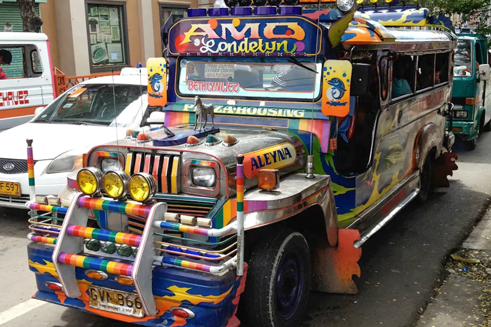
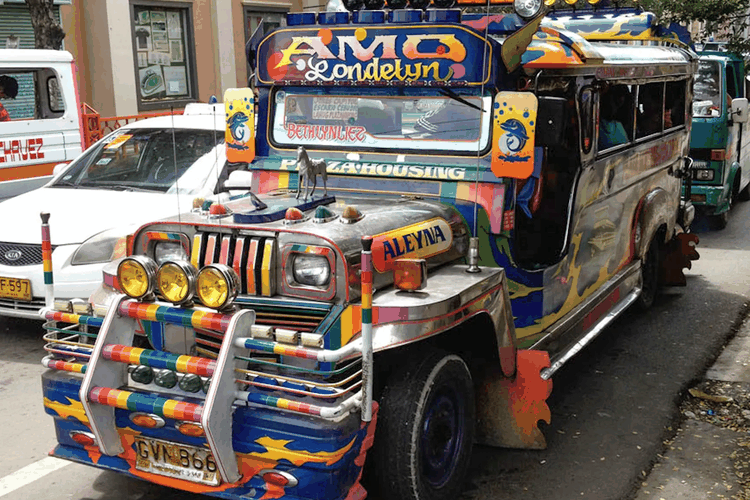

Every colour on your screen is a number.
Paleta takes one photo of a jeepney apart, pixel by pixel, until you can see the numbers.

A pixel is three lights
Your screen has no yellow in it. Each pixel is three tiny lights, red, green and blue, and each one’s brightness is a number from 0 to 255. Mix 242 red, 194 green and 48 blue and your eye sees jeepney yellow.
Two lights at full strength make a secondary colour: red and green make yellow, green and blue make cyan, blue and red make magenta. All three at 255 make white; all three at 0, black. Try each one.
Same colour, five names
RGB, HEX, HSL, HSV and CMYK are five ways of writing down one colour. HEX is RGB in base 16. HSL says it the way people talk: which hue, how vivid, how light. HSV (also called HSB) keeps the hue but swaps lightness for value: 100% value is the pure colour, not white. CMYK is subtractive, ink on paper, so it can only approximate a colour made of light.
Drag the handle on the wheel, or type into any row.
One colour, five notations
SVG wheel
Arrow keys: left and right turn the hue, up and down change saturation. Hold Shift for steps of 10.
| Model | Value |
|---|---|
| Additive light, for screens | |
| RGB in base 16 | |
| Hue angle, saturation, lightness | |
| Hue, saturation, value (HSB) | |
| Approximate: subtractive ink, for print |
Bits decide how many colours
Every bit you add doubles the values a pixel can hold: n bits give 2n. One bit is two values, black or yellow. Four bits give sixteen steps, and you can see every one. Twenty-four bits, eight per channel, give over sixteen million colours, more than the eye can separate.
colours = 2n
Squeeze the jeepney
Quantization keeps a small palette and repaints every pixel with its nearest match. Drag the divider across the jeepney: the left side is the original, the right is what survives. Fewer colours means fewer symbols to encode, so the file compresses better.
Uniform cuts every channel into equal steps. Median cut splits the photo’s own colours into boxes of equal population, so it spends colours where the photo needs them.
Uniform vs median cut
Uniform cuts every channel into equal steps. Median cut splits the photo’s own colours into boxes of equal population.
Method
Dithering
Your photo
Processed in your browser, never uploaded.
Palette (LUT) · 16 entries
16 colours used · 4 bits per pixel, est. size …
Estimated size is the raw indexed pixels plus the palette, before any compression.

A real file: jeepney-256.png
The slider above is a live preview. This is the jeepney actually saved with a 256-colour palette (median cut, no dithering): every pixel is one 8-bit index into that palette. Saved as a 24-bit PNG the same 750 × 500 image weighs 683 KB; indexed, it is 227 KB, a third of the size, and the eye barely notices.
Hear quantization
Sound is quantized too. Each sample of a wave is a number, and bit depth decides how many values it can take. Cut the bits and the smooth wave becomes a staircase you can hear as fizz and grit. Link the slider to the jeepney and one number drives both.
The tone never plays on its own; press Play.
Check yourself
Three questions, one for each big idea. A wrong answer doesn’t just say so: it sends you back to the section that explains it.
Nothing is recorded or graded.
Technical Media Spec
Every media file on this page: what it weighed before and after, how many colours or bits it keeps, and how it was squeezed.
Scroll sideways →
| Asset Name & File Format | Original Size → Compressed | Color Depth / Quantization | Compression Algorithm |
|---|---|---|---|
| jeepney-hero.webp WebP · hero and quantizer |
4.3 MB raw bitmap (1500 × 1000 × 3 bytes) → 190 KB WebP (q80) |
24-bit RGB, 8 bits per channel | WebP lossy: block prediction and transform coding, then entropy coding |
| jeepney-256.png PNG-8 · quantized sample |
683 KB as 24-bit PNG → 227 KB as 8-bit indexed PNG |
8-bit indexed: 256-colour palette (median cut) | PNG: DEFLATE (LZ77 + Huffman coding), lossless |
| crusher-demo.mp3 MP3 · #hear demo |
886 KB WAV (16-bit PCM, 44.1 kHz) → 121 KB MP3 (96 kbps) |
16-bit PCM source, mono; the demo itself steps down from 16 to 1 bit | MP3: perceptual MDCT coding + Huffman coding, lossy |
| colour-wheel.svg SVG · #models wheel |
27.5 KB as written → 6.2 KB gzipped |
Vector; 360 hue wedges, each a 24-bit HEX fill | Plain-text XML, compressed in transit with gzip (DEFLATE: LZ77 + Huffman) |
Sizes measured from the files in assets/. “Raw bitmap” is width × height × 3 bytes, what the image costs in memory before any compression.